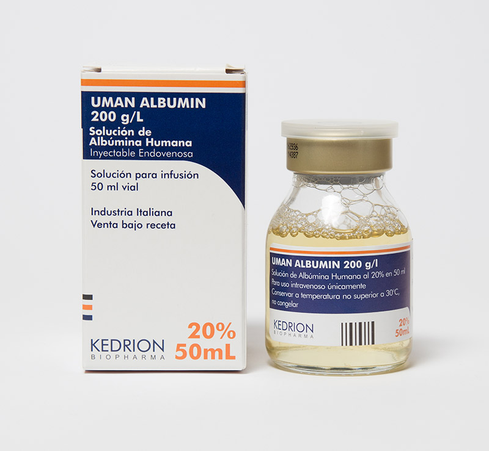

Uman Albumin®
Principio activo: Albúmina Humana
Presentación: Frasco Amp. 50 ml al 20%
Indicaciones: UMAN ALBUMIN está indicada como reintegro de albúmina en pacientes con carencia grave de albúmina, como ser en:
- Tratamiento de emergencia de shock hipovolémico.
- Quemaduras.
- Hipoproteinemia con o sin edema tales como las provocadas por cirugía mayor, sepsis o en pacientes en terapia intensiva.
- Síndrome de Distress o Dificultad respiratorio/a de adultos (ARDS).
- Bypass cardiopulmonar.
- Falla hepática aguda con o sin coma.
- Enfermedad hemolítica neonatal.
- Secuestro de fluidos ricos en proteínas en condiciones tales como peritonitis aguda, pancreatitis, mediastinitis y celulitis.
- Resuspensión de eritrocitos en transfusiones.
- Nefrosis aguda, tal como la que puede producirse por la falta de respuesta a la administración de ciclofosfamida o esteroides.
- Diálisis renal.
Almacenamiento: Conservar el producto a temperatura no superior a 30°C
GLN: 7798087803425